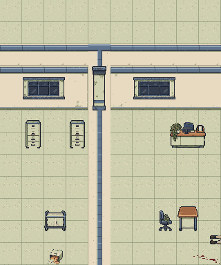
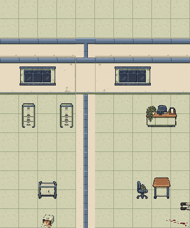

Building C: flush plaster wall joints
Editable map review. Automatic ornamental corner/foreground columns have been removed. Existing authored wall faces now continue through shared headers.
Full Building C board | Source review | Snapshot receipt

Before: automatic column sprite with protruding cap and base.
After: one flush plaster face, with the partition continuing below it.The wall cap, projected north face, foreground skirt and room openings remain separate authored parts. A dedicated joint-face layer sits over the cap only inside the projected north-wall plane. The decorative column source files remain preserved, but neither column model is placed on these walls.
Floor 0


Floor 1

Floor 2

Automatic support overlays: 0. Projected north joint-face cells: 90 across three floors. Source map SHA-256: 607f5dcc4830340bc1983b1ec747bd730066433f3d8536d45e88632c947cc4ad.
These renders do not establish playable multi-floor stairs, lighting, physics or whole-campus art approval.